| 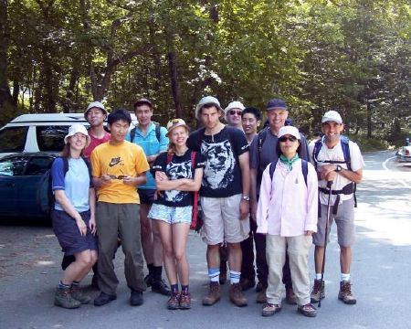 | 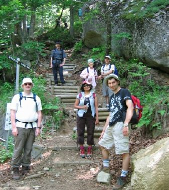 | 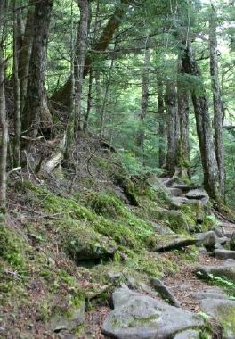 |
| Ready to walk... | and go | 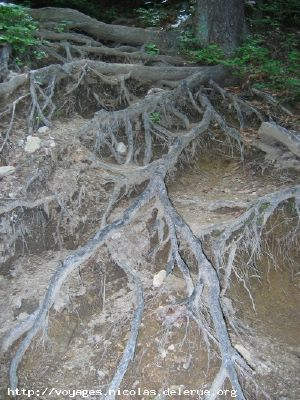 |
| 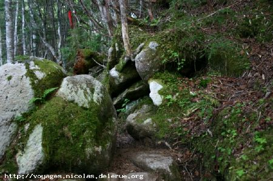 | 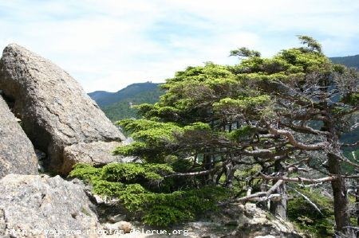 | |
| Thick forests | and rocks. | |
| 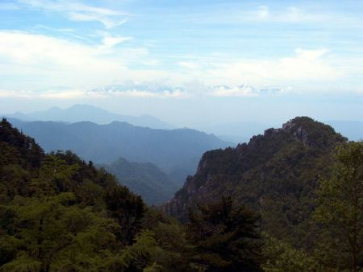 | 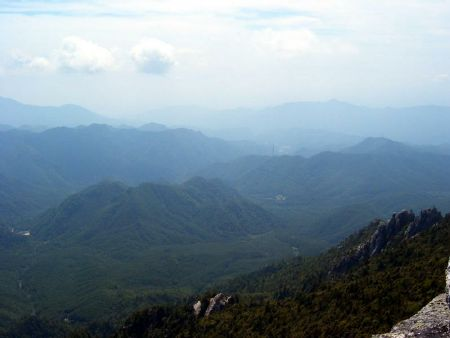 | 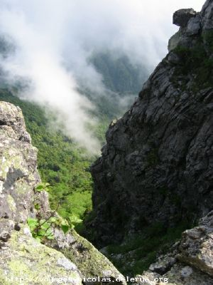 |
| some where in the clouds lurked Mt. Fuji | ||
|
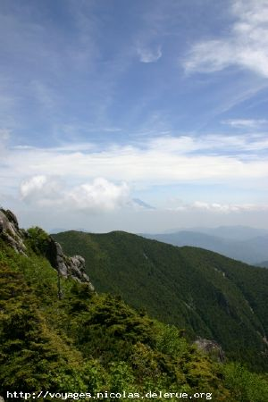 |
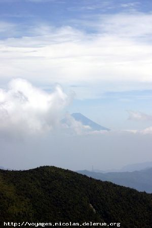
Nice skies with Mt. Fuji |
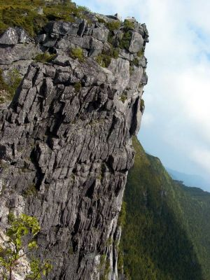 |
| 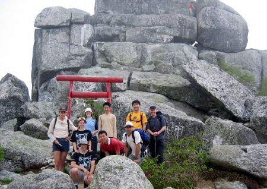 | 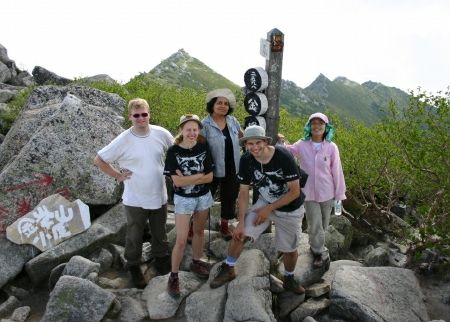 | 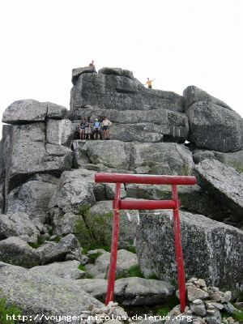 |
| Conquered the peak | ||
|
I'm glad to say that all 12
hikers came back from the Kinpu-san hike almost safe and sound :-)
I want to say extremely BIG
THANKS to all 3 drivers Nicolas, Akira and Mark for their
cooperation and car-support.
We met at 5 am at 7/11, but we
started moving in the direction of the starting point of the hike
only at 5:30. Akira with the hikers in his car went first to get
another hiker from Tokyo.
We started hiking 1 hour later
than was planed and soon split into 3 groups: Super fast hikers, Map
time hikers and Enjoying views hikers. The forest was really nice
with the trees looking like if they were growing from the stones and
rocky ridges were extraordinarily beautiful.
There were many nice views on the
way and lucky hikers could even see Fuji-san appearing from time to
time from the clouds.
The fast group reached the top 40
minutes faster than the map time. And after taking group pictures on
a big rock on the top Super fast hikers went back anticipating an
Onsen after the hike.
Map time hikers waited for
Enjoying views hikers
on the top and after taking
pictures also went back the same way as they came.
There was a difficult rocky
part before the top, which could add 1 more star to this hike.
Congratulations to everybody
who join this hike and conquered the Kinpu-san for the first
time in TWMC history.
While Super fast hikers were
enjoying onsen the mixed group of Map time hikers and Enjoying
views hikers was continuing their way back and they reached a
car well after dark around 9 pm.
We gathered all together in
the parking and started our way back to Tsukuba. On the way back
we stopped in a service area to get some snacks and from there 3
cars went back separately.
I hope that though the hike
was difficult it was still enjoyable for everybody.
The cost of the hike was more
than expected because of the high way toll:
Joban 1300
Tokyo 700
Chuo 600 + 2850
Thanks to everybody who
joined the Kinpu-san hike.
|